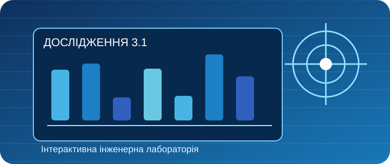

ДОСЛІДНИЦЬКЕ ЗАНЯТТЯ 3.1
Структура науково-дослідницької роботи
Архітектура наукової роботи. Змініть якість опису методики та даних і оцініть відтворюваність роботи.
Інженерна лабораторія · КМАН
1. Ключові питання та коротка теорія
Чому методику потрібно описувати так, щоб дослід повторили?
Проблема і практичний контекст
Розгляньте тему «Структура науково-дослідницької роботи». Визначте, яку реальну технічну проблему можна дослідити, які показники виміряти та кому корисний результат.
Поняття та їхній зміст
Вступ — проблема, мета і гіпотеза. Методика — як саме проводили дослід. Висновки — що встановлено на підставі даних.
Методика дослідження
Змініть лише один чинник за раз, фіксуйте повнота методики, % і повнота даних, %, проведіть кілька повторів. Порівняйте результати та зазначте обмеження.
Як перевірити висновок
Порівняйте результати з контрольним варіантом. Не робіть висновків за одним виміром; поясніть похибки, джерела інформації та межі застосування моделі.
2. Інтерактив: упізнайте поняття
Знайдіть правильне визначення терміна Вступ.
3. Віртуальний експеримент
Змініть якість опису методики та даних і оцініть відтворюваність роботи.
Навчальна ілюстративна модель: її числові значення не є результатами реальних лабораторних випробувань. Для фізичних величин використано спрощені залежності.
Змініть якість опису методики та даних і оцініть відтворюваність роботи.
Графік залежності результату від першого параметра
Для графіка другий параметр зафіксований.
Журнал спостережень
4. Конструктор алгоритму дослідження
Упорядкуйте етапи за допомогою перетягування або кнопок ↑ ↓ (зручно на смартфоні).
5. Ваш дослідницький мініпроєкт
Застосуйте ідеї заняття до власної інженерної проблеми.
Відкриється сторінка звіту: у вікні друку оберіть «Зберегти як PDF». Відповіді зберігаються у Вашому браузері.
6. Наукові можливості КМАН
Ознайомтеся з діяльністю Київської Малої академії наук і перевіряйте актуальні вимоги до конкурсних робіт на офіційному сайті.
Київська Мала академія наук — офіційний сайтЗавдання: сформулюйте, як результати цього заняття можна використати у власній дослідницькій роботі.